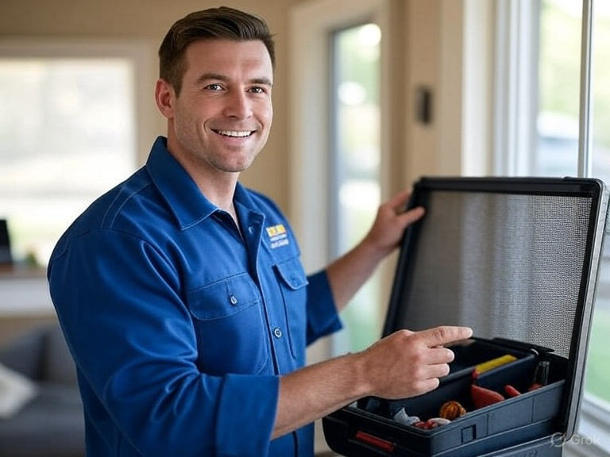

Reliable Screen Repair Services in Lakeville & Burnsville, MN - test

Welcome to Lakeville Screen Repair, your local experts for keeping bugs out and fresh air in. Whether your window screens are torn, your door screens are bent, or your porch needs a full rescreening, we provide fast, affordable, and professional services right at your doorstep. Serving the Lakeville and Burnsville areas, we're committed to helping Minnesota homeowners enjoy bug-free living without the hassle.
Our Services
- Window Screen Repair & Replacement: Fix tears, holes, or damaged frames on any window size. We use durable, high-quality mesh to ensure long-lasting results.
- Door Screen Repair: Repair or replace screens on sliding patio doors, storm doors, and entry doors. Get your doors functioning smoothly again.
- Porch & Patio Enclosures: Full rescreening for porches, patios, and gazebos. Upgrade to pet-resistant or solar-blocking screens for added comfort.
- Custom Screen Fabrication: Build new screens for unique shapes or new constructions. Mobile service means we handle everything on-site.
- Screen Upgrades: Install removable panels, glass inserts, or reinforced materials to enhance your home's functionality and value.
Why Choose Us?
- Local & Convenient: Based in the Lakeville/Burnsville area, we offer mobile services—no need to transport your screens. We come to you!
- Affordable Pricing: Competitive rates with no hidden fees. Most repairs start at just $20–$50 per screen, depending on size and materials.
- Quality Materials: We use premium fiberglass, aluminum, or specialty meshes that withstand Minnesota's weather—from hot summers to harsh winters.
- Fast Turnaround: Same-day or next-day service available. Get your screens fixed quickly so you can enjoy the outdoors sooner.
- Satisfaction Guaranteed: Backed by years of experience, we stand behind our work with a warranty on all repairs and installations.
Request a Free Quote Today
Fill out the form below to get started. Provide your details, and we'll contact you to schedule a no-obligation assessment. Subscribe to our newsletter for tips on screen maintenance and special offers!
Contact Us
Have questions? Call us at (123) 456-7890 or email info@lakevillescreenrepair.com. We're here to help make your home more comfortable!